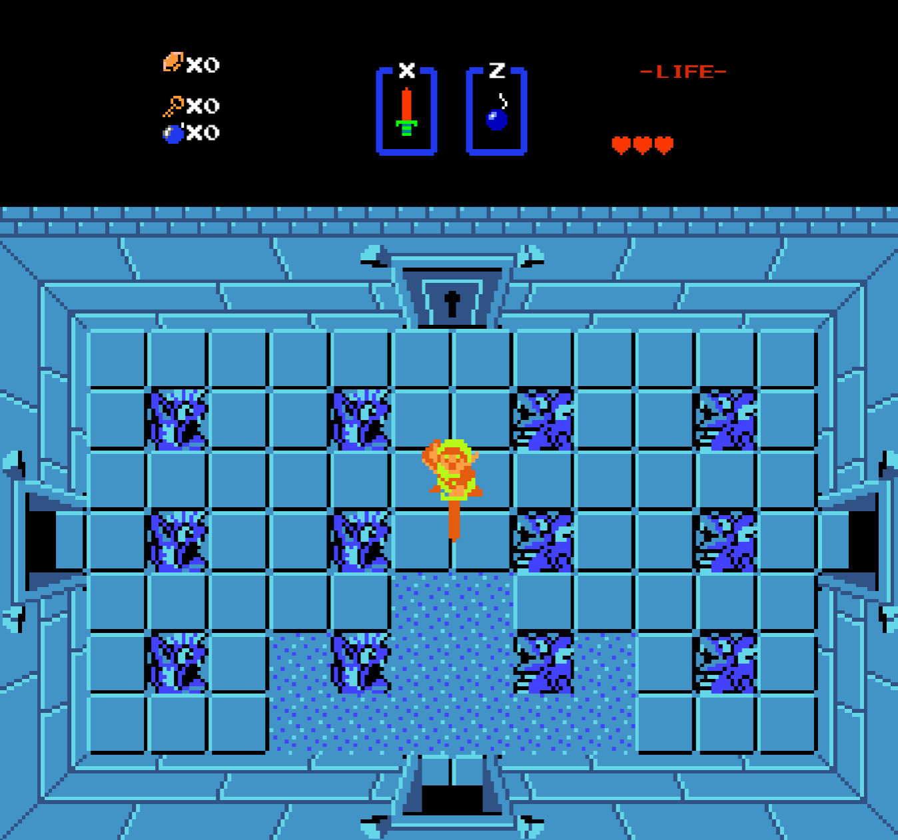
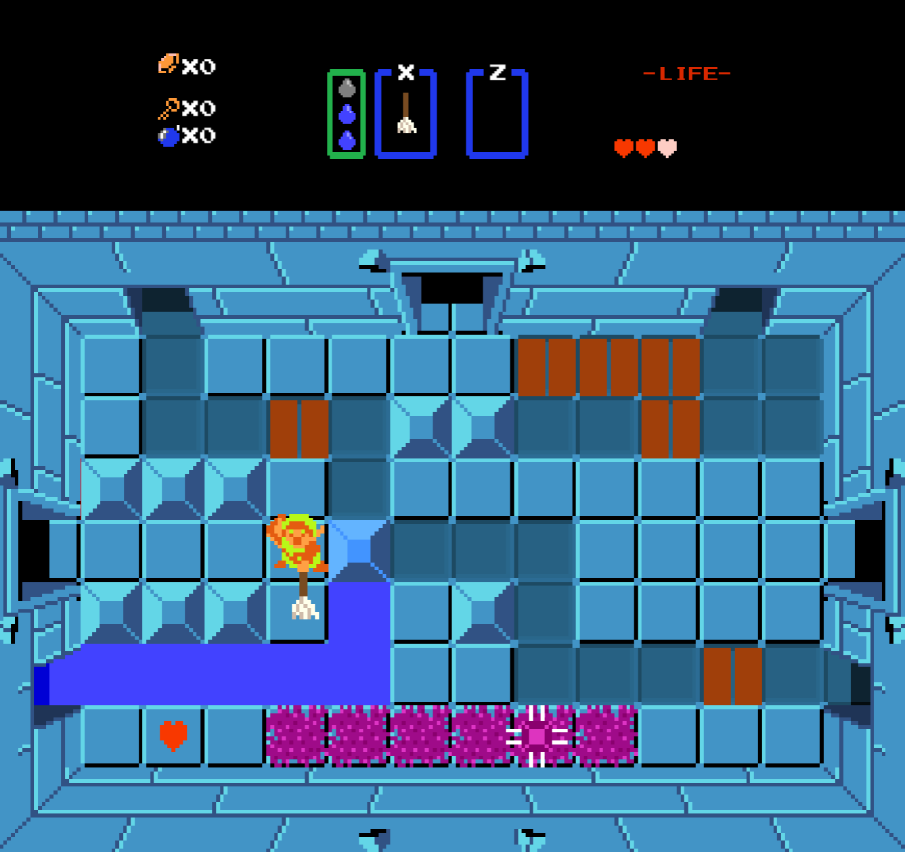
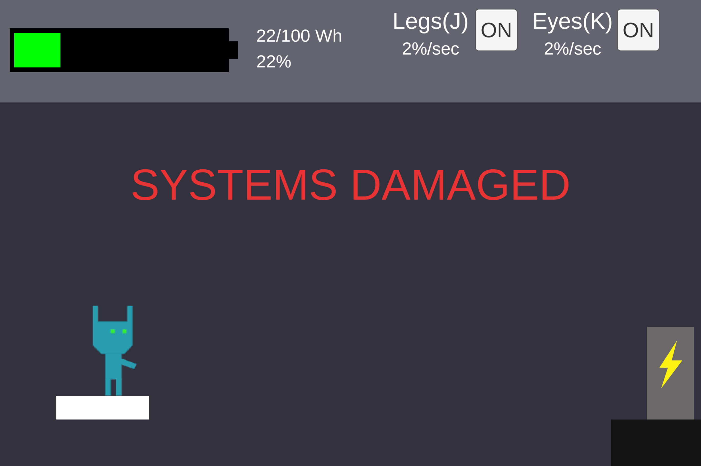

John Keane
Projects
 
- Developed animations for Link (player)
- Worked on implementation of enemies such as Stalfos (skeletons), Gel (slime), BladeTraps, and Aquamentus (final boss)
- Implemented weapons such as sword, bow, and bomb
- Created initial pitch for custom dungeon and led the main level/puzzle design
- Created and implemented poison system and poison art
- Conceptualized and implemented new enemies such as Poison Stalfos (skeletons), and Poison BladeTraps
- Created and implemented new broom "weapon"

Otherworld is a Metroidvania-style game centered around a robot who finds themselves rebooting on a battleground, injured and incapable of complete movement. Journey through a treacherous world collecting different body attachments, solving various puzzles, and exploring to find secrets that might aid you as you figure out what happened before you met your supposed end.

- Worked on developing game concept and mechanics
- Helped lead level design and led main puzzle design and implementation
- Implemented base gun and sword functionality and systems and created sprites
- Created and implementated "Sentinel Logs" to add lore to the game
- Developed visual effects and transitions for final boss fight